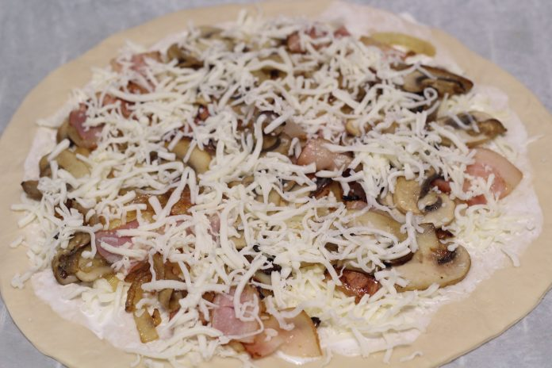

Ingredients per a fer pizza carbonara
- 1 massa de pizza o una porció de massa casolana
- 100 grams de xampinyons
- 100 ml de nata per a cuinar
- 4 rodanxes de bacon
- Mitja ceba
- Formatge Parmesà
- Sal
- Pimienta
Com fer pizza carbonara casolana
- Comencem tallant la ceba en juliana i fem a foc lent, que es quede blandita, amb un toc de sal i pebre. Una vegada calfada retirem i reservem. Intenteu que s'escórrega tot l'oli possible.
- Estenem la massa de pizza que hàgem realitzat i la cobrim amb la nata per a cuinar. Continuem amb la ceba calfada, els xampinyons en làmines, el bacon i posem formatge parmesà ratllat (o qualsevol altre formatge fundent que ens agrade).

- Enfornem uns 15 minuts a 180é o en el cas que hàgem comprat la massa d'una marca comercial, com indique el fabricant.
Tornar a l 'Inici